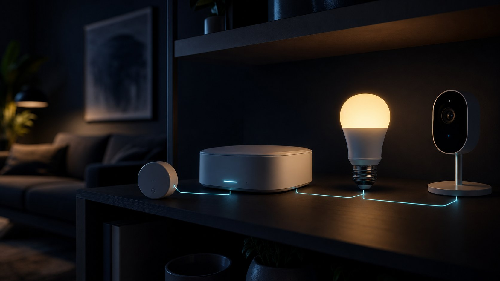

Setting Up a Smart Home Without a Subscription Trap

The smart home business model has drifted. A device that cost sixty dollars now comes with a monthly fee to unlock the feature you bought it for, and a cloud dependency that turns it into a paperweight when a service is retired. None of that is inevitable. With a little care at purchase time, you can build a genuinely useful setup that responds instantly, keeps working when the internet drops, and costs nothing per month.
Why subscriptions crept in
Cloud video storage was the wedge: it has real recurring costs, so charging for it was defensible. What followed was less defensible — person detection, activity zones, notification history, automation rules, and even basic scheduling moved behind monthly plans on devices that were perfectly capable of doing the work themselves. The pattern spread to doorbells, locks, thermostats, vacuums, and pet feeders.
The deeper problem is not the fee but the dependency. A device that needs a company's servers to function is a device whose lifespan is a business decision. Several well-known products have been remotely disabled or stripped of features after an acquisition or a strategy change, and owners had no recourse. Local control is the insurance policy against that, and in 2026 it is easier to buy than it used to be.
Buy for local control
The practical standard to look for is Matter, with Thread for battery-powered sensors and low-power devices. Matter's value is that a certified device can be controlled directly on your network by any compatible hub, including open-source ones, rather than only through the manufacturer's app. Zigbee and Z-Wave remain excellent, well-supported choices with a huge device catalogue and no cloud requirement at all.
Be aware of the marketing gap: “works with Matter” sometimes means a cloud bridge rather than native support, which reintroduces the dependency you were avoiding. The test is simple and worth doing in the shop or within the return window — turn off your internet connection, leave Wi-Fi running, and see what still responds. Anything that fails that test is a cloud device wearing a local badge.
- Look for: native Matter or Thread certification, Zigbee or Z-Wave radios, local API or open protocol support, and physical controls that work without any app.
- Be cautious of: features that appear only in a paid tier, cameras with no local storage option, locks that cannot be opened with a key or code, and hubs sold with a mandatory plan.
- Check before buying: stated software support period, whether the app still receives updates, and how the manufacturer handled past product retirements.
A hub you control
A local hub is the single change that removes most subscription pressure. Options range from a low-cost single-board computer running an open-source home automation platform, to a purpose-built appliance, to the hub functionality already built into many smart speakers and streaming boxes. The key attributes are local processing, support for several radio protocols, and automations that execute without an internet connection.
Self-hosting adds maintenance, so be honest about appetite. A good middle path is an off-the-shelf hub with strong local support and a documented export route, rather than a project that only you can fix. Whichever you choose, keep a written note of how the system is wired together — which device is on which protocol, where the backups go, and how someone else would reset it if you were away.
The offline test is the whole guide in one sentence: unplug the internet, keep the local network running, and see which of your devices still turn lights on, open doors, and record video. Buy more of whatever passes.
Cameras, the hardest category
Video is where subscriptions are most entrenched and where local options require the most thought. The workable approach is a camera that supports a standard streaming protocol such as RTSP or ONVIF, recorded to local storage — a network video recorder, a small server, or a network drive. Local person and vehicle detection now runs acceptably on modest hardware, which removes the most common reason people pay monthly.
Weigh privacy properly here. A camera with a cloud subscription is uploading footage of your household to someone else's servers continuously; a local recorder keeps it in the building. If you do want remote access, reach it through your own encrypted connection rather than exposing the recorder to the internet, and never forward ports to a camera directly. That is still one of the most common ways home systems end up on public search engines.
What is worth paying for
Not every subscription is a trap. Professional alarm monitoring with a response service is a real ongoing service with real costs. Cellular backup for a security system genuinely consumes network capacity. Cloud video storage for a business premises may be the right call for evidentiary reasons. The distinction is whether you are paying for an ongoing service or paying rent on a feature your hardware already performs.
Before agreeing to any recurring cost, ask what happens to the device if you cancel. If the answer is that it keeps working with reduced convenience, the plan is optional and you can try life without it. If the answer is that it stops functioning, you are not buying a service, you are leasing the hardware — and it should be priced and evaluated as a lease.
Regional notes
United States
Device choice is the widest here and prices are competitive, but bundled monitoring contracts can carry long minimum terms. Check insurance requirements before relying on a self-monitored setup, since some policies offer discounts only for professionally monitored systems.
Canada
Some US-market devices arrive later or with reduced feature sets, and support for bilingual voice control varies. Cold-weather performance matters for outdoor sensors, locks, and battery-powered cameras — check the rated operating temperature rather than assuming.
United Kingdom
Radio frequencies differ from North America, so verify that Z-Wave devices are the correct regional variant before ordering from overseas. Consumer product security rules require manufacturers to state a minimum support period, which is a useful, comparable purchasing signal.
Australia
Check local electrical compliance for anything that connects to mains wiring, and use a licensed electrician for in-wall switches and relays. Heat and humidity affect outdoor devices and batteries, and stated support periods and repair options vary considerably between imported and locally supported brands.
Questions readers ask
Can a smart home work without the internet?
Largely, yes, if the devices support local protocols such as Matter, Thread, Zigbee, or Z-Wave and you run a local hub. Lights, sensors, locks, and automations can all run on the local network; remote access and voice assistants are the parts that usually need a connection.
Is Matter enough to avoid cloud lock-in?
Native Matter or Thread support helps a great deal, but some products advertise compatibility through a cloud bridge instead. Test it by disabling your internet connection while leaving Wi-Fi running, and see whether the device still responds locally.
Do I need to pay for camera cloud storage?
Not if the camera supports a standard protocol such as RTSP or ONVIF and you record locally to a recorder or network drive. Local detection of people and vehicles is now practical on modest hardware, which removes the usual reason for a monthly plan.
Which smart home subscriptions are actually worth it?
Ones that deliver an ongoing service rather than unlocking a feature your hardware already performs: professional alarm monitoring, cellular backup, or offsite storage required for evidence. If cancelling would stop the device working entirely, you are leasing hardware, not buying a service.
The bottom line
A subscription-free smart home is a purchasing discipline more than a technical project. Favour Matter, Thread, Zigbee, and Z-Wave devices, run a hub that processes automations locally, record video to storage you own, and apply the offline test before every purchase. Pay monthly only for genuine ongoing services, and check the stated support period before you commit to any brand.
This article provides general information, not legal, financial, security, or professional advice. Product terms, availability, privacy practices, and local requirements can change. Check the current information from the relevant provider and seek qualified local advice for high-impact decisions. IntelGuard may earn a commission from future affiliate links, at no additional cost to readers. Read our affiliate disclosure.